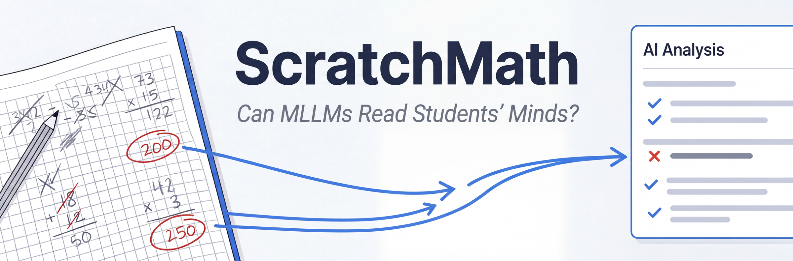
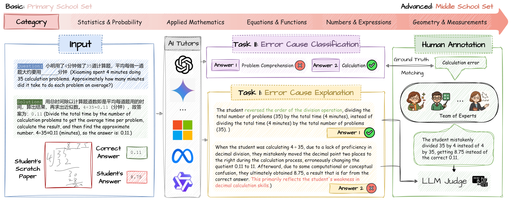
Assessing student handwritten scratchwork is crucial for personalized educational feedback but presents unique challenges due to diverse handwriting, complex layouts, and varied problem-solving approaches. Existing educational NLP primarily focuses on textual responses and neglects the complexity and multimodality inherent in authentic handwritten scratchwork. Current multimodal large language models (MLLMs) excel at visual reasoning but typically adopt an "examinee perspective", prioritizing generating correct answers rather than diagnosing student errors.
To bridge these gaps, we introduce ScratchMath, a novel benchmark specifically designed for explaining and classifying errors in authentic handwritten mathematics scratchwork. Our dataset comprises 1,720 mathematics samples from Chinese primary and middle school students, supporting two key tasks: Error Cause Explanation (ECE) and Error Cause Classification (ECC), with seven defined error types. We systematically evaluate 16 leading MLLMs, revealing significant performance gaps relative to human experts (83.9% avg.) — the best model (o4-mini) achieves only 57.2%.
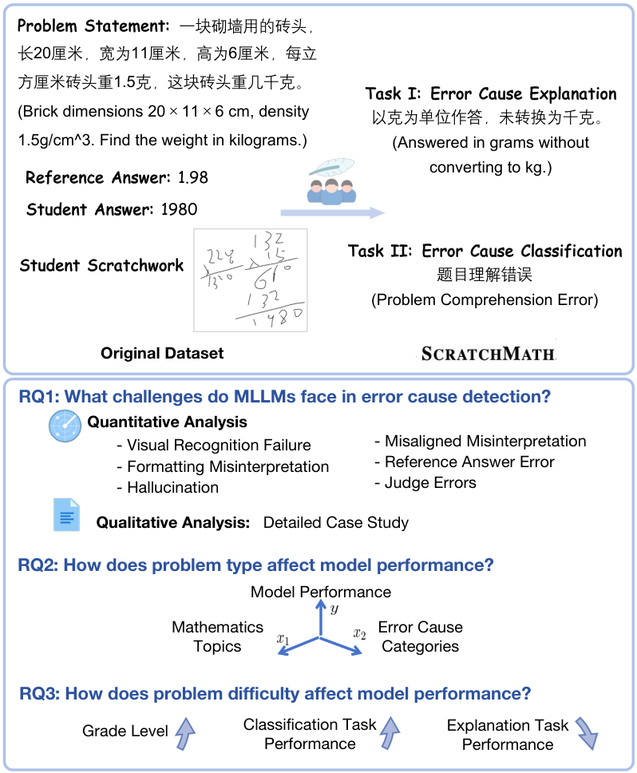
Given a math problem, its correct answer, reference solution, the student's incorrect answer, and an image of the student's handwritten scratchwork, the model must generate a free-form explanation of the specific cause of the student's error.
Evaluation: LLM-as-a-Judge (using o3-mini, 88.6% agreement with human judges).
Using the same inputs, the model must classify the error into one of 7 predefined categories:
| # | Category (Chinese) | Category (English) |
|---|---|---|
| 1 | 计算错误 | Calculation Error |
| 2 | 题目理解错误 | Question Comprehension Error |
| 3 | 知识点错误 | Knowledge Gap Error |
| 4 | 答题技巧错误 | Problem-Solving Strategy Error |
| 5 | 手写諜抄错误 | Handwriting Transcription Error |
| 6 | 逻辑推理错误 | Logical Reasoning Error |
| 7 | 注意力与细节错误 | Attention & Detail Error |
Evaluation: Weighted-average accuracy.
The dataset is hosted on HuggingFace: songdj/ScratchMath. It consists of 1,720 authentic handwritten scratchwork samples annotated through rigorous human-machine collaboration involving multiple stages of expert labeling, review, and verification.
| Subset | Samples | Grade Level |
|---|---|---|
primary | 1,479 | Grades 1–6 |
middle | 241 | Grades 7–9 |
Each sample contains: question_id, question, answer, solution, student_answer, student_scratchwork (image), error_category, error_explanation.
from datasets import load_dataset
ds_primary = load_dataset("songdj/ScratchMath", "primary", split="train")
ds_middle = load_dataset("songdj/ScratchMath", "middle", split="train")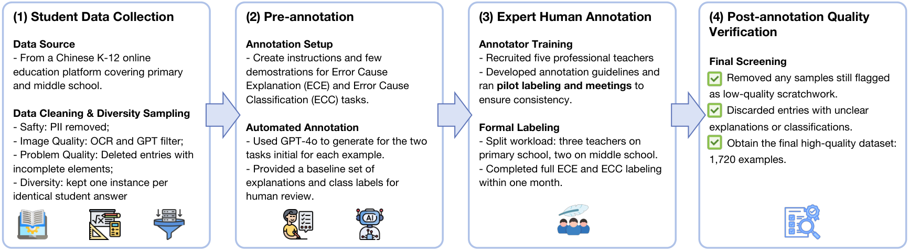
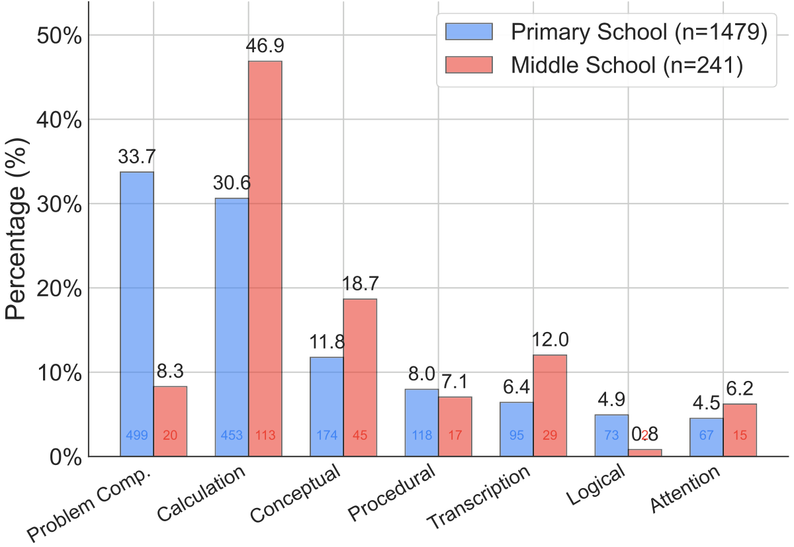
Performance of state-of-the-art MLLMs on ScratchMath. Human expert performance averages 83.9% across all metrics.
| Model | #Params | ECE Primary | ECE Middle | ECC Primary | ECC Middle | Average |
|---|---|---|---|---|---|---|
| Human Expert | — | 93.2 | 89.0 | 80.1 | 73.4 | 83.9 |
| o4-mini* | — | 71.8 | 69.7 | 40.1 | 47.3 | 57.2 |
| Gemini 2.0 Flash Thinking* | — | 65.9 | 61.0 | 43.9 | 47.3 | 54.5 |
| Gemini 2.0 Flash | — | 52.2 | 46.9 | 38.6 | 49.0 | 46.7 |
| QVQ* | 72B | 57.5 | 56.8 | 12.7 | 17.0 | 36.0 |
| Qwen2.5-VL | 72B | 40.0 | 34.0 | 32.5 | 49.4 | 39.0 |
| Gemma-3 | 27B | 38.9 | 26.1 | 32.2 | 46.1 | 35.8 |
| Skywork-R1V* | 38B | 37.5 | 33.6 | 27.7 | 43.2 | 35.5 |
| GPT-4o | — | 47.7 | 44.8 | 26.1 | 22.0 | 35.2 |
| InternVL2.5 | 78B | 27.1 | 24.5 | 30.7 | 44.8 | 31.8 |
* denotes reasoning models. Bold blue indicates best performance per column. Full results available in the paper.
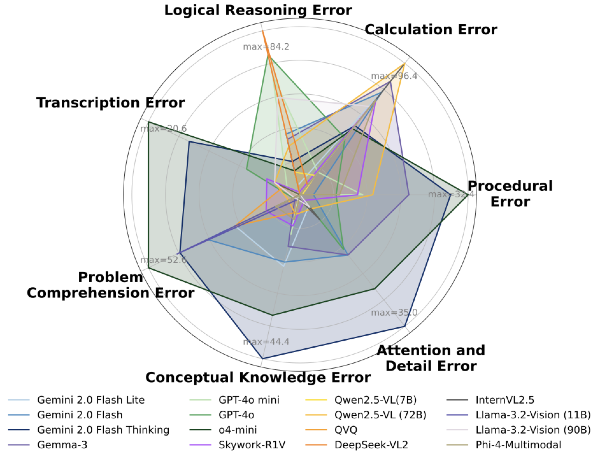
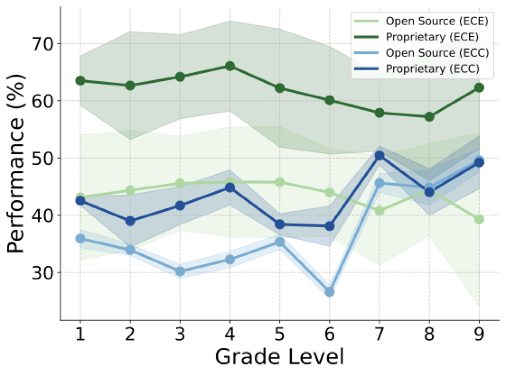
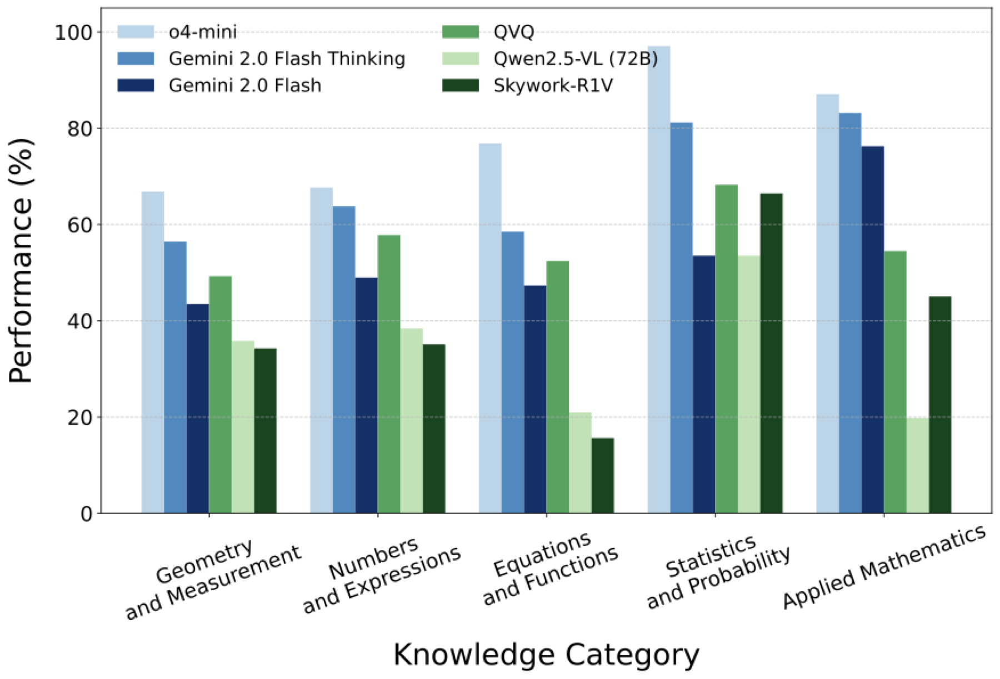
Representative failure cases from the best-performing model (o4-mini), illustrating key challenges in multimodal error diagnosis:
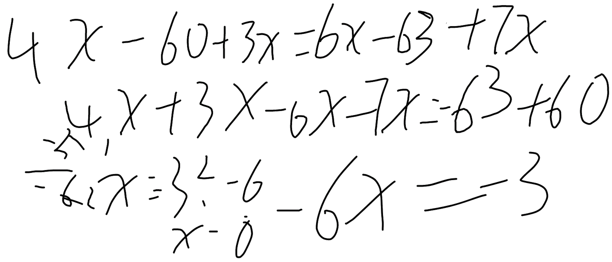
Problem: Solve for x: 4x − 3(20 − x) = 6x − 7(9 − x)
Correct: x = 1/2 Student: x = −1/2
The student miscalculated −63 + 60 as +3 instead of −3, leading to −6x = 3 and thus x = −1/2. The model failed to visually recognize the sign error in the scratchwork.
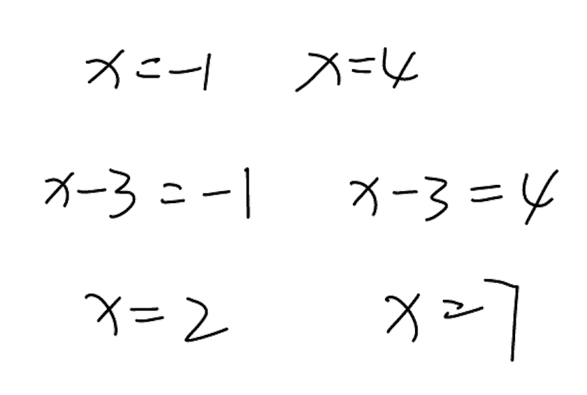
Problem: If the two roots of a(x+m)2+b=0 are −1 and 4, find the solutions to a(x+m−3)2+b=0.
Correct: x = 2 or 7 Student: x = 2 and 7
The student mistakenly treated the shifted equation as a(x−3)2+b=0, ignoring the +m term. Additionally, the student wrote "and" instead of "or" for the solution format.
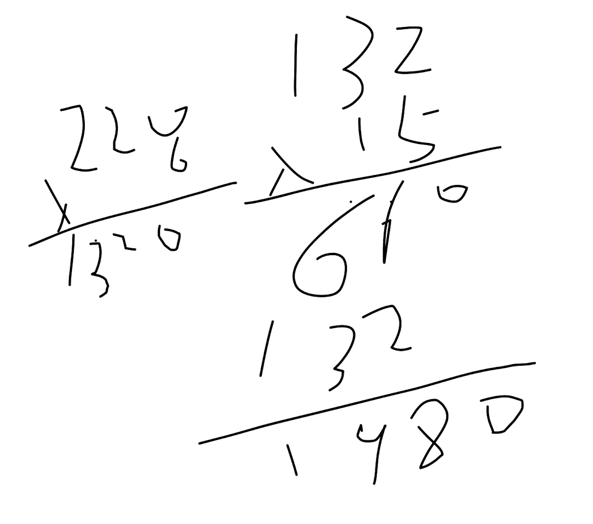
Problem: A brick has dimensions 20×11×6 cm and density 1.5 g/cm3. Find the weight in kilograms.
Correct: 1.98 kg Student: 1980
The student correctly computed the volume and mass (1980 g) but failed to convert grams to kilograms. The model misidentified this as a calculation error rather than a unit conversion oversight.
If you find this work useful, please cite:
@inproceedings{song2026scratchmath,
title={Can MLLMs Read Students' Minds? Unpacking Multimodal
Error Analysis in Handwritten Math},
author={Song, Dingjie and Xu, Tianlong and Zhang, Yi-Fan
and Li, Hang and Yan, Zhiling and Fan, Xing
and Li, Haoyang and Sun, Lichao and Wen, Qingsong},
booktitle={Proceedings of the 27th International Conference
on Artificial Intelligence in Education (AIED)},
year={2026}
}